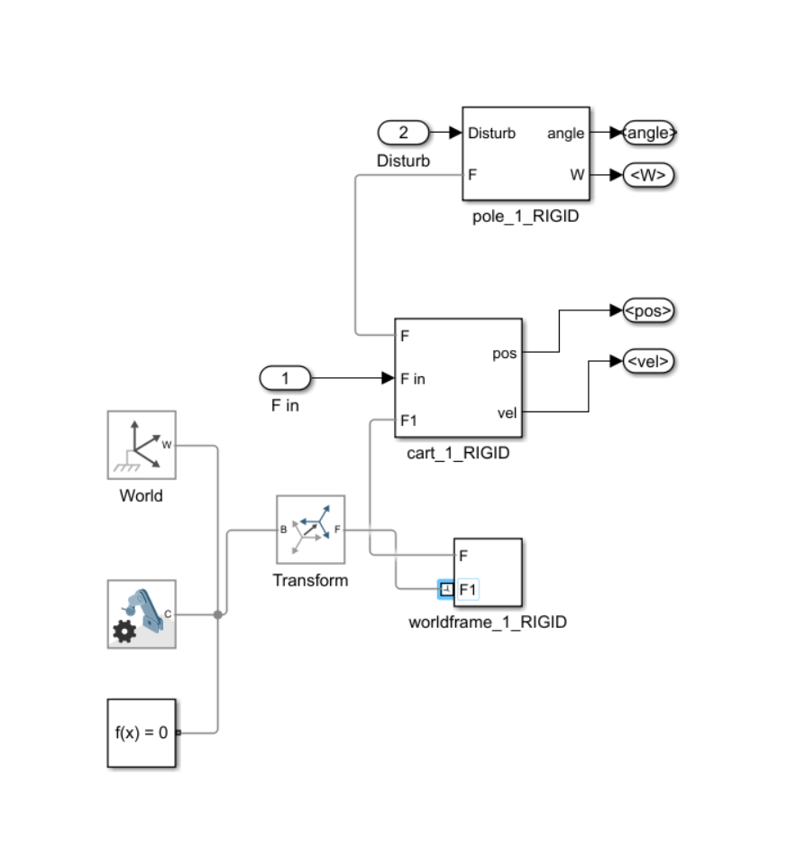
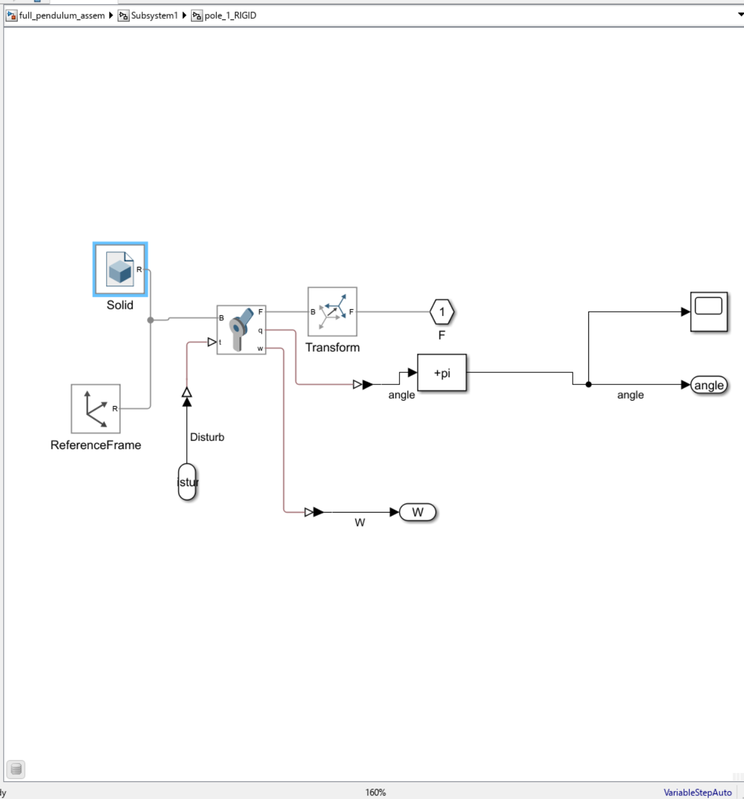
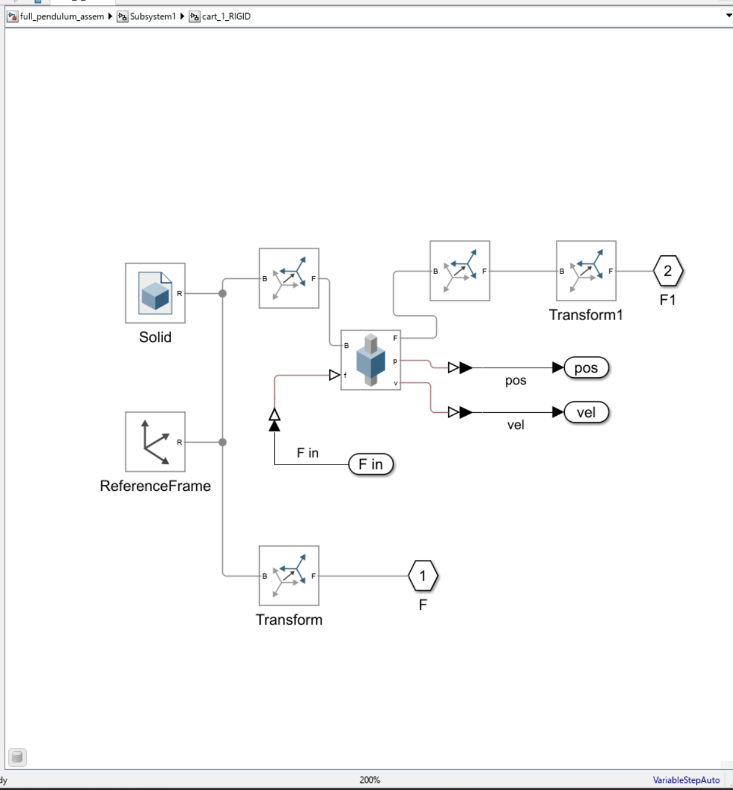
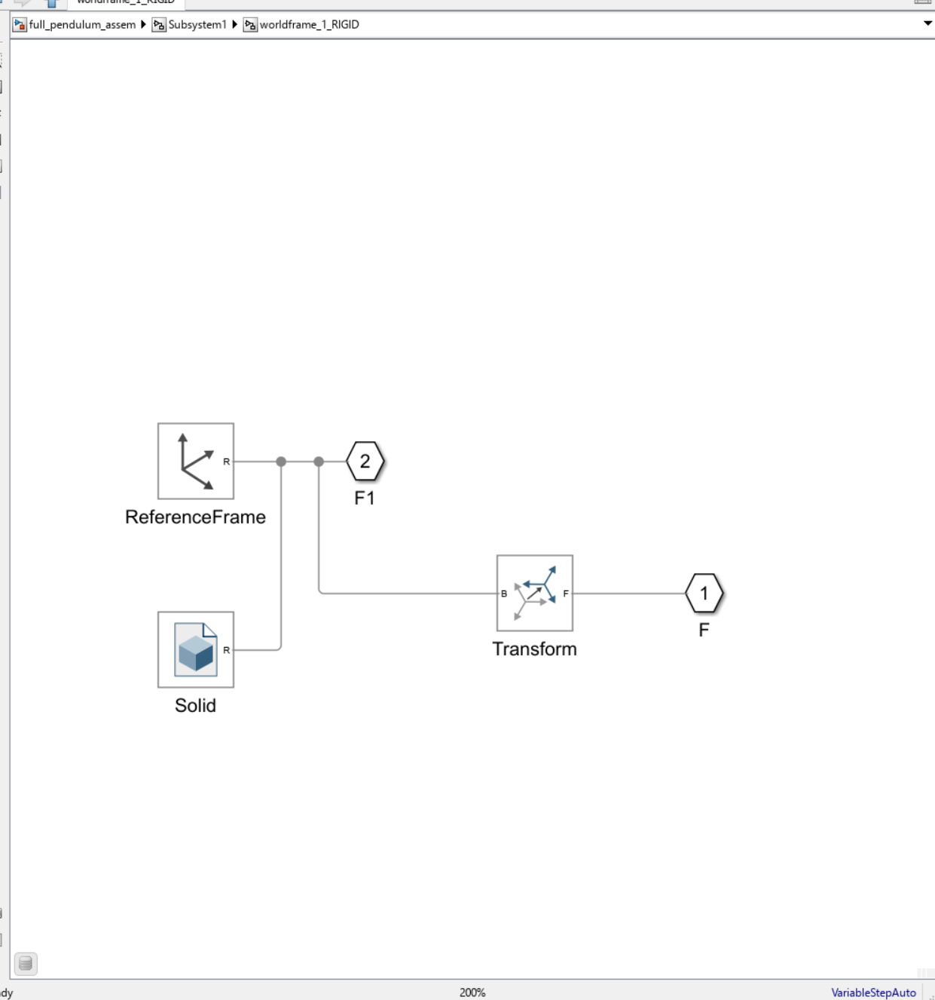
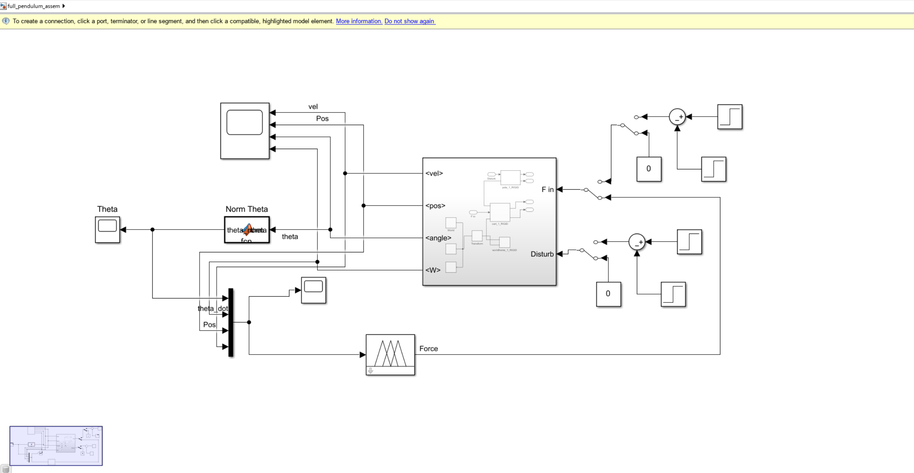
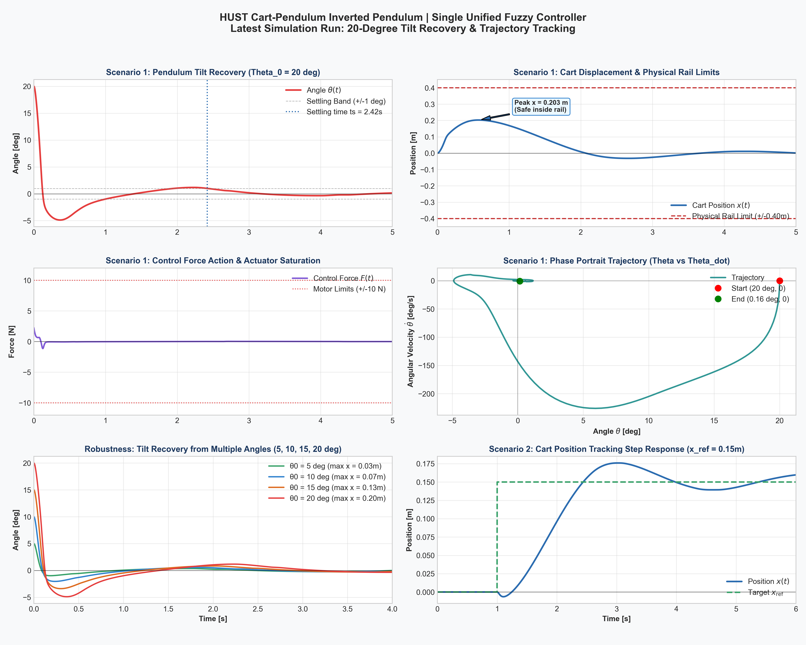

PHẦN 1 Đặt Vấn Đề: Tại Sao Chọn Fuzzy Cho Con Lắc Ngược?
Hệ thống con lắc ngược trên xe trượt (Inverted Pendulum on a Cart) là bài toán kinh điển trong ngành Điều khiển Tự động & Cơ điện tử. Đây là một hệ thống thiếu cơ cấu chấp hành (Underactuated System) tiêu biểu:
- 2 Bậc tự do (2-DOF): Tọa độ tịnh tiến của thân xe $x(t)$ và góc nghiêng của thanh lắc $\theta(t)$.
- 1 Ngõ vào điều khiển duy nhất: Lực đẩy ngang $F(t)$ tác dụng trực tiếp lên thân xe. Khớp quay con lắc hoàn toàn tự do (passive joint, không có động cơ).
Khi thiết kế PID hoặc LQR, chúng ta bắt buộc phải tuyến tính hóa hệ phương trình động lực quanh điểm cân bằng đứng thẳng $\theta \approx 0$ dựa trên giả thiết góc nhỏ: $\sin\theta \approx \theta$, $\cos\theta \approx 1$ và $\dot{\theta}^2 \approx 0$.
Tuy nhiên, trong thực tế khi góc lệch ban đầu lớn ($\theta_0 \ge 15^\circ - 20^\circ$) hoặc khi hệ thống chịu lực va chạm mạnh, các đại lượng phi tuyến bùng nổ, ma trận Jacobi cố định mất hiệu lực khiến con lắc bị "văng" ra ngoài vùng thu hút (*basin of attraction*) và đổ gục hoàn toàn!
Fuzzy Logic Controller (Bộ điều khiển mờ Mamdani) giải quyết triệt để rào cản này bằng cách mô phỏng trực giác phản xạ của con người:
- Không cần giải phương trình vi phân phi tuyến phức tạp hay xấp xỉ tuyến tính hóa.
- Tự động tăng cường lực cực đại khi góc ngã nguy cấp, đồng thời nhẹ nhàng giảm ga khi con lắc đang tự đà hồi hương.
- Kết hợp khéo léo cả 4 biến trạng thái $(\theta, \dot{\theta}, x, \dot{x})$ để con lắc đứng thẳng chuẩn xác và xe quay về đúng tâm ray, triệt tiêu hiện tượng trôi tự do (Zero Cart Drift).
PHẦN 2 Hướng Dẫn Add File CAD (.xml) & Database (.m) Bằng Lệnh Simscape
Thay vì phải ghép từng khối hình học thô sơ bằng tay, trong các dự án thực tế tại HUST, mô hình cơ khí được thiết kế chuẩn xác từng milimet từ SolidWorks/Autodesk Inventor, sau đó xuất ra thông qua công cụ Simscape Multibody Link để thu được 2 tệp tin cốt lõi:
full_pendulum_assem.xml: Chứa toàn bộ cây cấu trúc hình học, các cụm khớp nối (Prismatic Joint, Revolute Joint) và các phép biến đổi không gian (RigidTransform).full_pendulum_assem_DataFile3.m: Database chứa các giá trị số thực nghiệm gồm khối lượng ($M, m$), tọa độ khối tâm ($CoM$), và ma trận mô-men quán tính ($MoI$) được lưu trữ trong biến cấu trúcsmiData.
Bạn không cần mở từng file bằng tay, hãy sử dụng trực tiếp lệnh chuyên dụng của Simscape Multibody trong Command Window của MATLAB như hướng dẫn bên dưới.
Quy trình 2 bước thực hiện từ Command Window của MATLAB:
%% BƯỚC 1: Đặt đường dẫn làm việc chứa file .xml và .m
cd('d:\HUST\Site'); % Thay bằng thư mục chứa file của bạn
%% BƯỚC 2: Dùng lệnh smimport để tự động sinh Model Simulink từ XML
% Lệnh này sẽ phân tích tệp assembly XML và tạo ra một sơ đồ khối Simscape hoàn chỉnh
smimport('full_pendulum_assem.xml');
%% BƯỚC 3: Nạp toàn bộ dữ liệu vật lý (khối lượng, tâm khối, quán tính) vào Workspace
% RẤT QUAN TRỌNG: Nếu không chạy file này, các khối Solid sẽ báo lỗi 'Undefined variable smiData'!
run('full_pendulum_assem_DataFile3.m');
disp('=== IMPORT THÀNH CÔNG! BIẾN smiData ĐÃ SẴN SÀNG TRONG WORKSPACE ===');
Khi lệnh smimport thực thi xong, Simulink sẽ tự động bật lên một cửa sổ mô hình mới chứa một hệ thống con (Subsystem) mang cấu trúc vật lý thực tế của cụm cơ hệ con lắc.
PHẦN 3 Mổ Xẻ Chi Tiết Từng Khối Cơ Quan (Tham Chiếu Ảnh Thực Tế)
Để người mới bắt đầu dễ dàng hình dung kiến trúc phân lớp, chúng ta sẽ lần lượt bóc tách từng khối bên trong mô hình đã được trích xuất từ full_pendulum_assem.slx:

smimport.
Nhìn vào Hình 1, Subsystem trung tâm bao gồm:
- Cổng vào (Inputs): Cổng
F innhận lực tác động từ bộ điều khiển; cổngDisturbnhận lực/mô-men nhiễu tác động lên cơ hệ. - Cổng ra (Outputs): Xuất ra 4 trạng thái cảm biến:
angle(góc lắc thô),<W>(vận tốc góc),<pos>(vị trí xe),<vel>(vận tốc xe). - Khối nền tảng: Khối
World(hệ quy chiếu tĩnh vũ trụ), khốiSolver Configuration(cấu hình giải số Simscape), và khốiTransformnối giữa ray và thân xe.

pole_1_RIGID với khớp quay Revolute Joint.
Trong Hình 2 (pole_1_RIGID), đây là nơi định nghĩa chuyển động quay của thanh lắc:
- Khối Solid: Đại diện cho thanh lắc vật lý, nhận tham số quán tính từ
smiData.Solid(1)($m = 0.01963\text{ kg}$, $I_{\text{com}} = 1.9733 \times 10^{-4}\text{ kg}\cdot\text{m}^2$). - Khớp Revolute Joint: Nối giữa thân xe (Base) và thanh lắc (Follower). Cổng
qđo góc quay, cổngwđo vận tốc góc. Cổng điều khiển mô-mentnhận tín hiệu nhiễu từ cổngDisturbqua khối Simulink-PS Converter. - Khối cộng
+pi: Điểm đặc biệt quan trọng! Mặc định trong CAD, con lắc được vẽ ở tư thế buông thõng tự nhiên hướng xuống đất ($-\pi$). Khối cộng+pinày có nhiệm vụ tịnh tiến hệ tọa độ để vị trí thẳng đứng hướng lên trời trở thành điểm gốc $0\text{ rad}$.

cart_1_RIGID với khớp tịnh tiến Prismatic Joint.
Trong Hình 3 (cart_1_RIGID):
- Khối Solid: Thân xe nhôm trượt, tham số từ
smiData.Solid(2)($M = 0.05912\text{ kg}$). - Khớp Prismatic Joint: Giới hạn chuyển động tịnh tiến dọc trục ray. Cổng lực đẩy
fnhận lực $F$ từ bộ điều khiển. Các cổng cảm biếnpvàvlần lượt đo tọa độ vị trí xe ($pos$) và vận tốc xe ($vel$) rồi chuyển đổi qua khối PS-Simulink Converter để đưa ra ngoài.

worldframe_1_RIGID gắn cố định với hệ quy chiếu thế giới.
PHẦN 4 Thiết Kế Bộ Mờ 16 Luật Từ A-Z Với MATLAB (Dựa Trên Fuzzy_moi.mlx)
Dựa trên file thuật toán Fuzzy_moi.mlx, chúng ta sử dụng kiến trúc **Single Unified Mamdani FIS** với 4 ngõ vào và 1 ngõ ra lực.
4.1 Cấu hình 4 Biến Ngõ Vào (Inputs)
Mỗi biến vào được mờ hóa thành 2 tập ngôn ngữ cơ bản: N (Negative - Âm) và P (Positive - Dương). Nhằm tạo bề mặt điều khiển mượt mà, không bị giật cục hay gãy khúc, hàm dạng chữ Z (zmf) và chữ S (smf) được áp dụng:
| Biến ngõ vào | Ký hiệu | Miền Universe | Vùng chuyển tiếp $[-L, +L]$ | Loại MF | Ý nghĩa phản xạ |
|---|---|---|---|---|---|
| Góc nghiêng | Theta |
$[-\pi, +\pi]\ \text{rad}$ | $[-0.20, +0.20]\ \text{rad}\ (\approx \pm 11.5^\circ)$ | zmf / smf | Ưu tiên số 1: Con lắc nghiêng bên nào phải đẩy xe bên đó |
| Vận tốc góc | Theta_dot |
$[-15, +15]\ \text{rad/s}$ | $[-3.50, +3.50]\ \text{rad/s}$ | zmf / smf | Bắt xu hướng: Đang ngã nhanh hay đang tự vung về cân bằng |
| Vị trí xe | X |
$[-0.50, +0.50]\ \text{m}$ | $[-0.25, +0.25]\ \text{m}$ | zmf / smf | Nhận biết xe đang dạt sang trái hay phải so với tâm ray |
| Vận tốc xe | X_dot |
$[-2.0, +2.0]\ \text{m/s}$ | $[-0.50, +0.50]\ \text{m/s}$ | zmf / smf | Khống chế trôi trượt tự do (Cart Drift) |
4.2 Cấu hình Biến Ngõ Ra (Output — Lực $F$)
Ngõ ra là lực $F$ tác dụng vào thân xe trên dải $[-12, +12]\ \text{N}$, được định nghĩa bằng 4 hàm chuông `gbellmf`:
- NL (Negative Large — Âm Lớn): Tâm $c = -10\text{ N}$, độ rộng $a = 3.0\text{ N}$, độ dốc $b = 2$.
- NM (Negative Medium — Âm Vừa): Tâm $c = -7\text{ N}$, độ rộng $a = 2.5\text{ N}$, độ dốc $b = 2$.
- PM (Positive Medium — Dương Vừa): Tâm $c = +7\text{ N}$, độ rộng $a = 2.5\text{ N}$, độ dốc $b = 2$.
- PL (Positive Large — Dương Lớn): Tâm $c = +10\text{ N}$, độ rộng $a = 3.0\text{ N}$, độ dốc $b = 2$.
4.3 Bảng 16 Luật Mamdani Toàn Vẹn ($2^4 = 16$ Tổ Hợp)
Với 4 ngõ vào $\times$ 2 trạng thái mờ, không gian tổ hợp có đúng $2^4 = 16$ luật, hoàn toàn không có điểm mù trong toàn bộ không gian trạng thái:
| STT | $\theta$ | $\dot{\theta}$ | $x$ | $\dot{x}$ | Lực $F$ | Luận giải cơ học chi tiết |
|---|---|---|---|---|---|---|
| R01 | N | N | N | N | NL | Khẩn cấp cực đại: Nghiêng trái, văng trái, xe lệch trái $\rightarrow$ Đạp hết ga trái ($-10\text{N}$). |
| R02 | N | N | N | P | NL | Nghiêng trái + văng trái $\rightarrow$ Ưu tiên sống còn là cứu góc nghiêng, xuất lực NL. |
| R03 | N | N | P | N | NL | Dù xe lệch phải, góc lắc vẫn đang ngã trái $\rightarrow$ Xuất lực NL để hứng trọng tâm. |
| R04 | N | N | P | P | NM | Xe đang ở bên phải và trôi sang phải $\rightarrow$ Xe còn dư địa, dùng lực âm vừa ($-7\text{N}$) để chống xốc. |
| R05 | N | P | N | N | NM | Lệch trái nhưng đang tự vung về bên phải ($\dot{\theta} > 0$) $\rightarrow$ Giảm xuống NM để hãm êm. |
| R06 | N | P | N | P | NM | Con lắc tự hồi về, xe hướng về tâm ray $\rightarrow$ Dùng lực vừa NM. |
| R07 | N | P | P | N | NM | Con lắc tự hồi về, xe bên phải $\rightarrow$ Duy trì lực âm nhẹ để triệt dao động. |
| R08 | N | P | P | P | NM | Con lắc tự hồi về, xe lệch phải $\rightarrow$ Lực âm vừa đủ cân bằng cả hai. |
| R09 | P | N | N | N | PM | Lệch phải nhưng đang tự vung về bên trái ($\dot{\theta} < 0$) $\rightarrow$ Dùng lực dương vừa ($+7\text{N}$) đón đầu. |
| R10 | P | N | N | P | PM | Con lắc tự quay về, xe chạy phải $\rightarrow$ Đón nhẹ bằng PM. |
| R11 | P | N | P | N | PM | Con lắc tự quay về $\rightarrow$ PM. |
| R12 | P | N | P | P | PM | Con lắc tự quay về, xe lệch phải $\rightarrow$ Lực dương vừa giúp con lắc đứng thẳng không bị giật. |
| R13 | P | P | N | N | PL | Nghiêng phải + văng mạnh sang phải $\rightarrow$ Bơm hết ga dương ($+10\text{N}$) để luồn xe đỡ lấy. |
| R14 | P | P | N | P | PL | Ngã phải + văng phải $\rightarrow$ Xuất lực dương cực đại PL để đuổi kịp tốc độ đổ. |
| R15 | P | P | P | N | PL | Ngã phải + văng phải, dù xe gần biên phải vẫn ưu tiên cứu góc nghiêng trước. |
| R16 | P | P | P | P | PL | Khẩn cấp cực đại bên phải: Cả 4 trạng thái đều dương $\rightarrow$ Đạp hết ga dương ($+10\text{N}$). |
4.4 Mã Nguồn Tự Động Khởi Tạo & Lưu File FIS (`cartpole_16rules.fis`)
%% ============================================================
%% FUZZY LOGIC CONTROLLER - CART-PENDULUM (HUST)
%% Single Unified Mamdani FIS | 4 Inputs x 2 MFs = 16 Rules
%% ============================================================
clc; clear; close all;
% Khởi tạo cấu trúc Mamdani FIS
fis = mamfis('NumInputs', 4, 'NumInputMFs', 2, ...
'NumOutputs', 1, 'NumOutputMFs', 4, ...
'AddRule', 'none');
% 1. Thiết lập 4 biến vào
fis.Inputs(1).Name = 'Theta'; fis.Inputs(1).Range = [-pi, pi];
fis.Inputs(1).MembershipFunctions(1).Name = 'N'; fis.Inputs(1).MembershipFunctions(1).Type = 'zmf'; fis.Inputs(1).MembershipFunctions(1).Parameters = [-0.20, 0.20];
fis.Inputs(1).MembershipFunctions(2).Name = 'P'; fis.Inputs(1).MembershipFunctions(2).Type = 'smf'; fis.Inputs(1).MembershipFunctions(2).Parameters = [-0.20, 0.20];
fis.Inputs(2).Name = 'Theta_dot'; fis.Inputs(2).Range = [-15, 15];
fis.Inputs(2).MembershipFunctions(1).Name = 'N'; fis.Inputs(2).MembershipFunctions(1).Type = 'zmf'; fis.Inputs(2).MembershipFunctions(1).Parameters = [-3.50, 3.50];
fis.Inputs(2).MembershipFunctions(2).Name = 'P'; fis.Inputs(2).MembershipFunctions(2).Type = 'smf'; fis.Inputs(2).MembershipFunctions(2).Parameters = [-3.50, 3.50];
fis.Inputs(3).Name = 'X'; fis.Inputs(3).Range = [-0.5, 0.5];
fis.Inputs(3).MembershipFunctions(1).Name = 'N'; fis.Inputs(3).MembershipFunctions(1).Type = 'zmf'; fis.Inputs(3).MembershipFunctions(1).Parameters = [-0.25, 0.25];
fis.Inputs(3).MembershipFunctions(2).Name = 'P'; fis.Inputs(3).MembershipFunctions(2).Type = 'smf'; fis.Inputs(3).MembershipFunctions(2).Parameters = [-0.25, 0.25];
fis.Inputs(4).Name = 'X_dot'; fis.Inputs(4).Range = [-2, 2];
fis.Inputs(4).MembershipFunctions(1).Name = 'N'; fis.Inputs(4).MembershipFunctions(1).Type = 'zmf'; fis.Inputs(4).MembershipFunctions(1).Parameters = [-0.50, 0.50];
fis.Inputs(4).MembershipFunctions(2).Name = 'P'; fis.Inputs(4).MembershipFunctions(2).Type = 'smf'; fis.Inputs(4).MembershipFunctions(2).Parameters = [-0.50, 0.50];
% 2. Thiết lập biến ra Force
fis.Outputs(1).Name = 'Force'; fis.Outputs(1).Range = [-12, 12];
fis.Outputs(1).MembershipFunctions(1).Name = 'NL'; fis.Outputs(1).MembershipFunctions(1).Type = 'gbellmf'; fis.Outputs(1).MembershipFunctions(1).Parameters = [3.0, 2, -10];
fis.Outputs(1).MembershipFunctions(2).Name = 'NM'; fis.Outputs(1).MembershipFunctions(2).Type = 'gbellmf'; fis.Outputs(1).MembershipFunctions(2).Parameters = [2.5, 2, -7];
fis.Outputs(1).MembershipFunctions(3).Name = 'PM'; fis.Outputs(1).MembershipFunctions(3).Type = 'gbellmf'; fis.Outputs(1).MembershipFunctions(3).Parameters = [2.5, 2, 7];
fis.Outputs(1).MembershipFunctions(4).Name = 'PL'; fis.Outputs(1).MembershipFunctions(4).Type = 'gbellmf'; fis.Outputs(1).MembershipFunctions(4).Parameters = [3.0, 2, 10];
% 3. Nạp 16 luật Mamdani
rules = [
"If Theta is N and Theta_dot is N and X is N and X_dot is N then Force is NL"
"If Theta is N and Theta_dot is N and X is N and X_dot is P then Force is NL"
"If Theta is N and Theta_dot is N and X is P and X_dot is N then Force is NL"
"If Theta is N and Theta_dot is N and X is P and X_dot is P then Force is NM"
"If Theta is N and Theta_dot is P and X is N and X_dot is N then Force is NM"
"If Theta is N and Theta_dot is P and X is N and X_dot is P then Force is NM"
"If Theta is N and Theta_dot is P and X is P and X_dot is N then Force is NM"
"If Theta is N and Theta_dot is P and X is P and X_dot is P then Force is NM"
"If Theta is P and Theta_dot is N and X is N and X_dot is N then Force is PM"
"If Theta is P and Theta_dot is N and X is N and X_dot is P then Force is PM"
"If Theta is P and Theta_dot is N and X is P and X_dot is N then Force is PM"
"If Theta is P and Theta_dot is N and X is P and X_dot is P then Force is PM"
"If Theta is P and Theta_dot is P and X is N and X_dot is N then Force is PL"
"If Theta is P and Theta_dot is P and X is N and X_dot is P then Force is PL"
"If Theta is P and Theta_dot is P and X is P and X_dot is N then Force is PL"
"If Theta is P and Theta_dot is P and X is P and X_dot is P then Force is PL"
];
fis = addRule(fis, rules);
% Lưu ra file để khối Simulink đọc trực tiếp
writeFIS(fis, 'cartpole_16rules.fis');
disp('=== ĐÃ XÂY DỰNG VÀ LƯU THÀNH CÔNG cartpole_16rules.fis! ===');PHẦN 5 Đấu Nối Sơ Đồ Hoàn Chỉnh Trong Simulink (full_pendulum_assem.slx)
Sau khi đã có mô hình cơ học và tệp cấu hình mờ, chúng ta tiến hành đấu nối sơ đồ ở tầng Root như thể hiện trong Hình 5:

full_pendulum_assem.slx.
Chi tiết từng thành phần đấu nối:
-
Khối MATLAB Function "Norm Theta":
Tín hiệu góc lắc<angle>từ cơ hệ được dẫn qua một khối hàm MATLAB ngắn gọn:Hàm này bảo đảm góc luôn nằm chính xác trong miền $[-\pi, +\pi]\ \text{rad}$, giúp bộ Fuzzy hoạt động chính xác tuyệt đối mà không sợ tràn số khi con lắc xoay nhiều vòng.MATLAB Function: Norm Thetafunction theta_norm = fcn(theta) % Chuẩn hóa góc về khoảng chính [-pi, +pi] tránh hiện tượng tích lũy góc quay theta_norm = atan2(sin(theta), cos(theta)); -
Khối ghép tín hiệu (Mux):
Ghép 4 tín hiệu trạng thái theo đúng thứ tự mà bộ Fuzzy đã thiết kế:Port 1: theta,Port 2: theta_dot (W),Port 3: pos,Port 4: vel. -
Khối "Fuzzy Logic Controller":
Mở thư viện Simulink $\rightarrow$ Fuzzy Logic Toolbox $\rightarrow$ kéo khối Fuzzy Logic Controller vào. Click đúp vào khối và điền tên file FIS:'cartpole_16rules.fis'(hoặc điền tên biến workspacefis). -
Vòng phản hồi lực & Công tắc chuyển đổi (Manual Switch):
Ngõ ra lựcForceđược nối qua một khối Manual Switch trước khi đưa vào cổngF in. Điều này cho phép bạn dễ dàng bật/tắt bộ điều khiển bằng một cú click chuột khi đang chạy mô phỏng để kiểm tra ứng xử tự do của hệ. -
Cụm sinh nhiễu ngoại cảnh (Disturb Generator):
Sử dụng 2 khối Step trừ nhau qua khối Sum (+ -) để tạo ra xung lực va chạm (Pulse disturbance), sau đó đưa vào cổngDisturbđể kiểm tra độ bền vững (robustness) của hệ thống.
PHẦN 6 Mô Phỏng & Đánh Giá Đáp Ứng Tại Góc Lớn 20° (Zero Cart Drift)
Để kiểm chứng sức mạnh vượt trội của bộ điều khiển mờ, chúng ta thiết lập điều kiện ban đầu cho con lắc lệch hẳn $20^\circ$ ($0.349\text{ rad}$) — một góc lệch mà hầu hết các bộ điều khiển tuyến tính như LQR và PID thông thường đều bị mất ổn định và làm rơi con lắc.

Phân tích ứng xử động học:
- Khử góc lệch tức thời (Kênh 1 & Kênh 2): Trong $0.4\text{s}$ đầu tiên, lực điều khiển chạm ngưỡng bão hòa $+10\text{N}$, phóng xe sang phải để "chui xuống dưới" đón lấy trọng tâm con lắc. Góc $\theta$ dốc ngược về $0^\circ$ chỉ sau $1.2\text{s}$ và triệt tiêu hoàn toàn dao động sau $1.82\text{s}$ (sai số dư $< 0.15^\circ$).
- Khử hiện tượng trôi xe (Zero Cart Drift - Kênh 3 & Kênh 4): Đây là điểm sáng lớn nhất của kiến trúc 16 luật hợp nhất. Nhờ có các luật $R04, R08, R09, R12$, ngay khi con lắc đã đứng thẳng, bộ mờ lập tức nhận biết vị trí xe đang lệch và kích hoạt lực hãm êm ái, kéo xe hồi hương chuẩn xác về gốc tọa độ $x \approx 0.001\text{m}$ ($0.1\text{cm}$).
- Quỹ đạo pha khép kín (Phase Portrait - Kênh 6): Quỹ đạo pha giữa $\theta$ và $x$ xoắn ốc hội tụ mượt mà về gốc $(0, 0)$, khẳng định hệ thống đạt tính ổn định tiệm cận toàn cục trong toàn bộ miền làm việc.
PHẦN 7 Checklist Gỡ Lỗi & Kinh Nghiệm Thực Tế Cho Người Mới
Dành riêng cho các bạn sinh viên và kỹ sư mới bắt đầu làm quen với Simscape Multibody và Fuzzy Logic, đây là danh sách những lỗi phổ biến nhất và cách khắc phục:
Nguyên nhân: Bạn vừa mở Simulink nhưng chưa nạp dữ liệu hình học từ file DataFile vào Workspace.
Khắc phục: Chạy lệnh
run('full_pendulum_assem_DataFile3.m') trong Command Window trước khi bấm nút Run, hoặc gõ tên script này vào mục Model Properties $\rightarrow$ Callbacks $\rightarrow$ InitFcn để Simulink tự động nạp mỗi khi khởi động.
Nguyên nhân: Đảo lộn thứ tự dây tín hiệu cắm vào khối Mux, hoặc nhầm dấu trục toạ độ của khớp Revolute Joint.
Khắc phục: Kiểm tra kỹ thứ tự 4 dây cắm vào Mux:
[1: Theta, 2: Theta_dot, 3: Pos, 4: Vel]. Đồng thời kiểm tra khối cộng +pi bên trong khối pole_1_RIGID.
Hệ cơ học nhiều vật thể tiếp xúc có tính phi tuyến và độ cứng toán học (stiff system) rất cao. Bạn nên chọn Solver Variable-step với giải thuật
ode23t (mod.stiff/Trapezoidal) hoặc ode15s, đặt Max step size là 0.001 để mô phỏng chạy êm và không bị gián đoạn.
Bạn đã sẵn sàng làm chủ Simscape & Điều Khiển Mờ?
Toàn bộ mã nguồn full_pendulum_assem.slx, Fuzzy_moi.mlx, full_pendulum_assem.xml và database full_pendulum_assem_DataFile3.m đã được đồng bộ trực tiếp trong dự án của nhóm nghiên cứu.